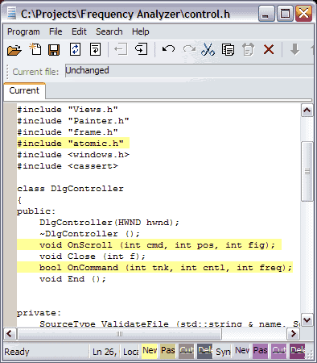

Once a file is checked out, you can edit its contents. In particular, if you double-click on a text-based file from within the Files tab, Code Co-op will open it inside its own editor as shown here. (You can change the default editor using Tools>Editor menu item.)
